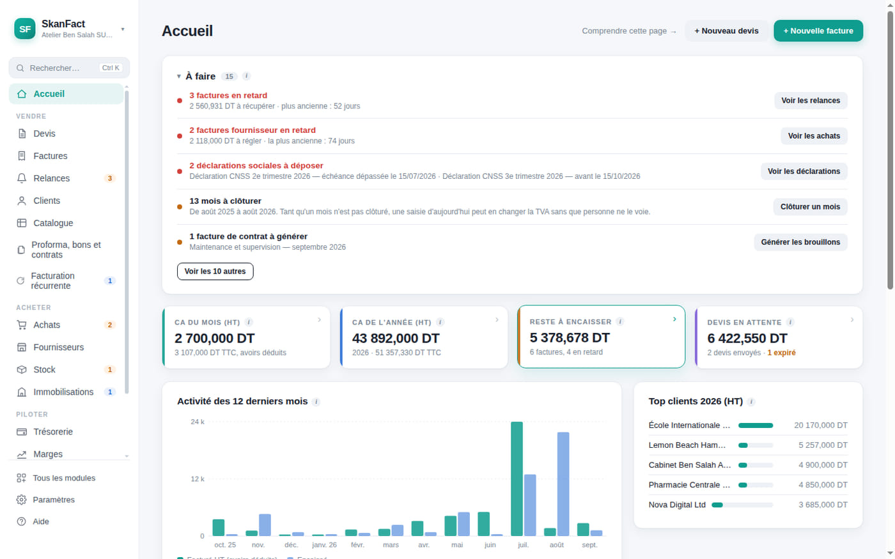

Votre première facture, ce matin.
Chaque champ porte une petite bulle qui explique à quoi il sert, avec des mots normaux. Trente-deux articles répondent aux questions qu'on n'ose pas poser à son comptable.
Mac et Windows · aucun compte à créer · vos données restent chez vous

Certains clients gardent une partie de votre facture et la versent au fisc à votre place. Cochez la case, le montant se calcule.
Le premier jour, l'application vous tient la main.
Un assistant vous pose les questions dans l'ordre, propose le catalogue de votre métier et les taux qui vont avec. Vous pouvez tout changer ensuite.
- 1Votre société
Nom, matricule fiscal, activité. Cinq écrans.
- 2Votre métier
Il propose vos prestations et votre régime fiscal.
- 3Votre client
Un nom et une adresse suffisent pour commencer.
- 4Votre devis
Vous le voyez se dessiner pendant que vous tapez.
- 5Votre facture
Un clic depuis le devis que le client a accepté.
Ne rien oublier
L'application vous dit ce qu'il reste à faire.
En ouvrant le matin, vous voyez les factures en retard, les devis sans réponse, les contrats à facturer et les déclarations qui approchent. Rien à cocher soi-même : tout se déduit de vos pièces.

Tunisie
Les règles d'ici sont déjà dedans.
Vous n'avez pas besoin de les connaître pour être en règle. L'application les applique, et vous explique chacune au moment où elle sert.
Le timbre fiscal
Ajouté à chaque facture, jamais aux devis ni aux avoirs. Vous n'avez rien à retenir.
Les quatre taux de TVA
Par ligne, et la déclaration du mois se prépare toute seule, crédit reporté compris.
La retenue à la source
Calculée pour vous, avec le rappel des attestations que vos clients doivent vous remettre.
Vos données restent sur votre ordinateur. Une copie de chaque matin est conservée trente jours, et rien ne part sur internet sans que vous le demandiez. L'application fonctionne même sans connexion.
Il ne vous réclamera plus de papiers.
À la fin du mois, un bouton lui envoie tout le dossier d'un coup : les PDF de vos pièces, les journaux, les écritures comptables. Le fichier est chiffré pour son cabinet et lisible par lui seul.


Dormir tranquille
Saurez-vous payer vos fournisseurs le 15 ?
La prévision ne compte que ce qui est vraiment engagé, et vous dit le jour où le solde passe sous zéro. C'est la question qu'on se pose la nuit, et à laquelle un cahier ne répond jamais.
Seize modules
Elle grandit avec votre entreprise.
Au départ, vous n'affichez que les devis et les factures. Le jour où vous embauchez ou tenez du stock, vous allumez le module — il était déjà là.
Tarifs
Vous payez la licence, jamais le droit d'ouvrir vos données.
Une licence annuelle, un paiement. À l'échéance, vous continuez à lire, imprimer et exporter tout ce que vous avez fait.
0DT · 30 jours
Pour vous faire un avis sur vos vraies factures.
- Toutes les fonctions
- Un jeu d'exemple pour apprendre
- Sans carte bancaire
390DT HT / an
Artisan, consultant, profession libérale : vous facturez seul.
- Devis, factures, avoirs, acomptes
- Relances et contrats récurrents
- TVA et dossier du comptable
- Mises à jour comprises
690DT HT / an
Vous achetez, vous stockez, vous employez.
- Tout ce que contient Indépendant
- Achats, stock, immobilisations
- Paie : bulletins, CNSS, IRPP, congés
- Trois postes, dossier partagé
Votre comptable ne paie rien, jamais. Son application est gratuite et sans limite de dossiers — elle lui sert même pour les clients qui n'utilisent pas SkanFact. Si c'est lui qui vous a parlé de nous, vous avez 20 % la première année, et il ne touche aucune commission.
Prix hors taxes, hors timbre fiscal. Licence de douze mois. À l'échéance, seule la création de nouvelles pièces s'arrête : lire, imprimer, exporter et sauvegarder restent possibles pour toujours.
Ce qu'on nous demande avant d'installer.
Je n'y connais rien en comptabilité.
C'est exactement pour vous. Chaque champ a sa bulle d'explication, et l'aide intégrée est écrite en français simple, sans jargon.
Où sont mes données ?
Dans un fichier sur votre ordinateur, dont le chemin est affiché dans l'application. Vous pouvez le copier, le chiffrer, et en garder un miroir sur une clé ou un dossier partagé.
Et si je me trompe ?
Une copie de l'état du matin est conservée trente jours, et la plupart des gestes proposent « Annuler » juste après le clic.
Ça marche sans internet ?
Entièrement. La connexion ne sert qu'aux mises à jour et à l'envoi d'un email, quand vous le demandez.
Et si je change d'ordinateur ?
Vous exportez vos données, vous installez l'application ailleurs, vous importez. Votre numérotation, votre historique et vos réglages suivent.
Mon comptable doit-il payer ?
Non. Son application est gratuite, sans limite de dossiers, et elle lui sert pour tous ses clients — pas seulement pour vous.
Faites-vous l'e-facture TTN ?
Pas aujourd'hui. SkanFact produit des PDF classiques et les journaux destinés à votre comptable. Si la facture électronique devient obligatoire pour votre entreprise, écrivez-nous.
Peut-on être deux à travailler dessus ?
Oui, sur un dossier partagé, chacun à son tour. Ce n'est pas de l'édition simultanée : l'application prévient et fusionne au lieu d'écraser en silence.
Contact
Parlons de votre entreprise.
Une question, une démonstration, plusieurs postes à équiper : écrivez-nous, nous répondons sous un jour ouvré.